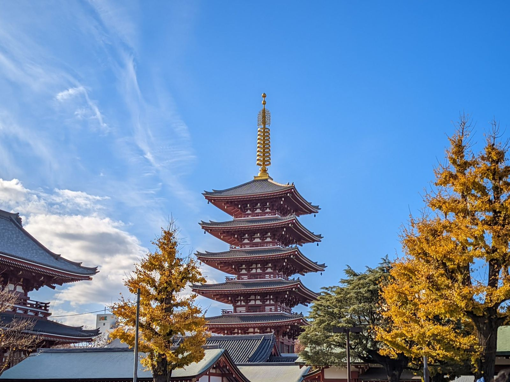

Halal food & mosques near Tokyo Skytree and Asakusa
We run a Muslim-friendly private villa in Higashi-Mukojima, a quiet old neighborhood of Sumida — about 15 minutes from Tokyo Skytree and 20 minutes from Asakusa. This is the guide we hand our own guests: where to eat halal, where to pray, and where to buy halal ingredients for our villa's halal-only kitchen.
Restaurants re-checked November 2026 (mosques and groceries: August 2026) · Travel times are door-to-door from the villa; taxi times are evening estimates
How we label halal status. "Halal-certified" means we found a certificate for the restaurant itself, published by a named body. "Halal menu" means the restaurant says its meat or dishes are halal, but we could not find a certificate in its own name. "Muslim-owned" means run by Muslims, with no pork. "Muslim-friendly" means no pork on the menu, without a certificate or Muslim ownership we could confirm. "Alcohol served" means alcoholic drinks are sold on the premises. Restaurants change — for an important dinner, please call ahead. We re-check this page regularly and remove places that close.
01Halal & Muslim-friendly restaurants
Nine places we can currently recommend, nearest first.
Amara — Tokyo Solamachi 6Fインド料理 アマラ
Halal menuAlcohol servedIndian · ¥1,500–3,500
An Indian restaurant (a Kolkata house founded in 1958) inside the Solamachi mall at the foot of Tokyo Skytree — curries, naan and tandoori with a halal menu. Beer and wine are also served. The easiest option to combine with a Skytree visit; the Skytree's own prayer room is a short walk away (see below).
From villa~15 min — Keisei-Hikifune → Oshiage; Solamachi is directly above the station · taxi ~8 min
Muslim-friendlyAlcohol servedDöner kebab · under ¥1,000
The cheap, quick and late option: döner kebab in pita or over rice, a few steps from Kaminarimon gate, from a kebab chain with shops across Tokyo. No pork, but it is not certified and the meat supplier is not published; cocktails are sold. A small counter, mostly for takeaway.
From villa~20 min — Tobu Skytree Line, Hikifune → Asakusa + 3 min walk · taxi ~7 min
HoursDaily 11:00–24:00
Address2-19-12 Kaminarimon, Taito-ku · Google Maps →
Halal Wagyu Yakiniku PANGA Asakusaハラル和牛焼肉ぱんが
Halal menuAlcohol servedWagyu yakiniku · courses from ¥9,500
The special-occasion dinner: A5 Kuroge wagyu yakiniku on the 4th floor, one street from Kaminarimon gate. The restaurant says every dish uses halal ingredients and its wagyu is halal-certified. The Japan Halal Foundation lists the group's main branch in Taito-ku, but we could not find a certificate for this branch. A sister restaurant on the 3rd floor serves halal wagyu sukiyaki (sets ¥5,830–8,030). Book on TableCheck — it is popular.
From villa~20–25 min — Tobu Skytree Line, Hikifune → Asakusa + 3 min walk · taxi ~8 min
HoursWeekdays 16:30–22:30 (last order 21:30); weekends also 12:00–15:00. No regular closing day.
NoteChildren of primary-school age are welcome; ask before bringing infants.
Halal-certified (Japan Halal Foundation ★★)Alcohol servedTempura · bowls from ¥3,800
Halal tempura, which is rare in Japan: a 10-seat counter certified by the Japan Halal Foundation since 2024. Its two-star level means every dish is halal and drinks such as sake are served in separate glasses. Wagyu tempura bowls and omakase courses, all gluten-free. A prayer space may be offered when the room allows.
From villa~20 min — Tobu Skytree Line, Hikifune → Asakusa + 4 min walk · taxi ~7 min
HoursDaily 12:00–20:30 (last seating 19:30); 15:00–17:00 tempura bowls only
Halal menuPrayer room & wuduWagyu yakiniku · lunch from ¥3,900
A5 Iga wagyu yakiniku on the 7th floor near Kaminarimon, known for its towering wagyu platter. The restaurant describes itself as halal-certified, but it is not on the Japan Halal Foundation's published list and no other certifier is named. A prayer room with a wudu area, child-friendly seating and stroller access. Sources differ on whether alcohol is served — ask when you book.
From villa~20 min — Tobu Skytree Line, Hikifune → Asakusa + 5 min walk · taxi ~9 min
Ramen you can actually eat: creamy wagyu-bone broth instead of pork, from the group that opened Gyumon in Shibuya, Japan's first halal wagyu yakiniku, in 2007. Spicy wagyu ramen and A5 wagyu gyukatsu sets. The group serves halal wagyu but names no certifying body; no alcohol at either branch. The original Asakusa branch, north of Senso-ji, welcomes children and has a small prayer room in its Japanese-style seating. The Kaminarimon branch (Grand Gate Asakusa 3F) is nearer the station, but its listing says children are not allowed.
From villaAsakusa: ~25–30 min — Tobu → Asakusa + 8 min walk · taxi ~8 min. Kaminarimon: ~20 min — Tobu → Asakusa + 3 min walk · taxi ~12 min
HoursBoth branches daily 12:00–22:00 (official site); the Asakusa branch closes on some irregular days
A small ramen counter run by a Muslim owner from Bangladesh: halal chicken ramen (try the spicy fried-chicken version) and vegan ramen, with no pork and no alcohol. Only nine counter seats on stools — fine for a small group, hard with strollers. One listing says it is certified by the Japan Halal Foundation, but we could not confirm a certificate.
From villa~20–25 min — Tobu Skytree Line, Hikifune → Asakusa + 7 min walk · taxi ~7 min
HoursUsually 10:00–22:00, Fridays from 14:00 (sources differ — check Instagram)
Halal-certified (Japan Halal Foundation ★★)Prayer spaceAlcohol servedSushi · lunch from ¥1,540, dinner from ¥3,300
Tokyo's first halal sushi restaurant, certified by the Japan Halal Foundation at its two-star level: every dish is halal, and alcohol is served. Halal soy sauce, vinegar, rice and pickled ginger, and no mirin. A quiet counter north of Senso-ji temple, with a prayer space for customers. Reservation recommended.
From villa~25–30 min — Tobu → Asakusa + 10 min walk · taxi ~10 min
Hours12:00–15:00 and 17:00–22:00 (Sundays and holidays until 21:30). Closed Wednesdays and some Tuesdays.
A Muslim-owned Chinese-Islamic restaurant in a basement near Kinshicho station, loved by Tokyo's Muslim community — more than fifteen lamb dishes, a lamb-bone hotpot and noodle dishes. No pork; beer and Shaoxing wine are on the drinks menu. Generous portions, honest prices, open every day.
From villa~25 min — Oshiage → Kinshicho (Hanzomon line, 1 stop) + 3 min walk · taxi ~13 min
HoursDaily 11:00–15:00 and 17:00–23:00 (last order 22:30)
A word of caution: several halal restaurants that still appear in older guides — including Naritaya Halal Ramen Asakusa and both Sekai Cafe branches (Asakusa and Oshiage) — appear to have closed permanently. If a blog post is more than a year old, double-check before walking there.

Sensoji, Asakusa — the mosques below are all within reach of this corner of the city
02Mosques & prayer spaces
The villa itself has prayer mats, a Quran and a qibla indicator (you pray in the bedrooms) — these are for when you are out.
Masjid Darul Arqam — Asakusa Mosqueダールル・アルカム・マスジド
Full mosqueJumu'ah 12:30 / 12:45
The villa's neighborhood mosque, and the closest full masjid: about a 20–25 minute walk across the Sumida River via Shirahige Bridge. Managed by the Islamic Circle of Japan, with wudu facilities (hot water in winter) and Friday khutbah at 12:30. During Ramadan it hosts community iftar and nightly tarawih.
Tokyo Skytree has an official prayer space on the 1st-floor Group Floor — separate rooms for men and women, free, open to everyone. There is no dedicated wudu area (use restroom sinks). If you cannot find it, ask any information counter for the reihai space.
From villa~20 min walk, or ~15 min by train (Keisei-Hikifune → Oshiage) · Tokyo Skytree Town, 1-1-2 Oshiage · Floor guide →
Masjid As-Salaam, Okachimachiアッサラームマスジド
Jumu'ah 12:00 / 12:45 / 13:20
A well-organized masjid near Okachimachi with three Friday congregations — convenient to combine with halal shopping in Ameyoko, two minutes away. (A new, larger building nearby is planned — check their site for the latest.)
From villa~30–35 min · 4-6-7 Taito, Taito-ku · Official site →
Tokyo Camii東京ジャーミイ
Japan's largest mosqueHalf-day excursion
Japan's largest and most beautiful mosque, in Ottoman style, with a Turkish culture center and halal market. Realistically 55–70 minutes away — treat it as a half-day excursion rather than a daily prayer stop. Friday adhan 12:30; guided tours on weekends.
Address1-19 Oyama-cho, Shibuya-ku (Yoyogi-Uehara stn) · Visit info →
03Halal groceries for the villa's kitchen
Our kitchen is halal-only — pork and alcohol have never entered it. Here is where to fill the fridge.
Within walking distance
Gyomu Super Hikifune (~10–12 min walk) — a discount supermarket whose chain carries a halal-certified product line, e.g. frozen Brazilian chicken with the certificate printed on the package. Important: it is a regular supermarket that also sells pork and alcohol — only package-marked halal items are halal, and stock varies by day.
Ito-Yokado Hikifune (~8–10 min walk, at Keisei-Hikifune station) — full supermarket for vegetables, fruit, fresh fish, rice and eggs.
LIFE Higashi-Mukojima (~10 min walk) — another full supermarket, opens earlier.
Proper halal shopping
Kameido Halal Food (~25 min) — Bangladeshi-run halal grocery with halal-processed chicken and mutton, spices and rice. The nearest dedicated halal grocer to the villa.
Ameyoko, Ueno (~30 min) — the famous market street: the Center Building basement is full of Asian ingredients and spices (mixed floor — check packages), and Masjid As-Salaam is two minutes away.
Shin-Okubo / Ikebukuro (~40–50 min) — Tokyo's dedicated halal supermarkets: Nasco Halal Food, Toko Indonesia (tempeh, sambal, Indomie) and Al-Flah. Worth one big shop for a longer stay.
Online delivery — Nasco, AL MODINA and others deliver halal meat to Tokyo overnight; order on arrival day, cook the next evening.
THE HOSPITEL by Dr. is a Muslim-friendly private villa for up to 10 guests — prayer mats and a qibla indicator, a halal-only kitchen, a wudu-ready bath, and doctor-curated sleep design. One group per night.